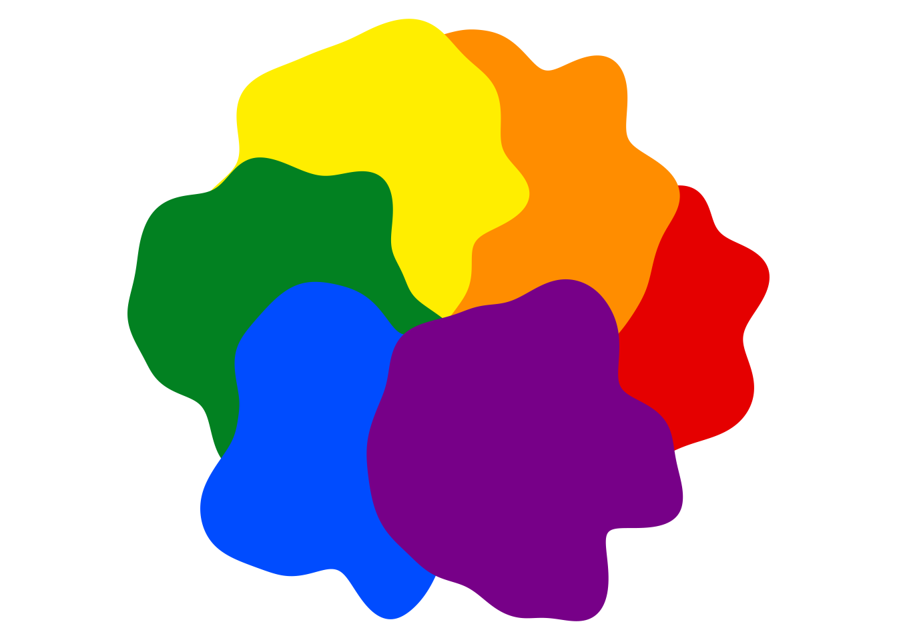
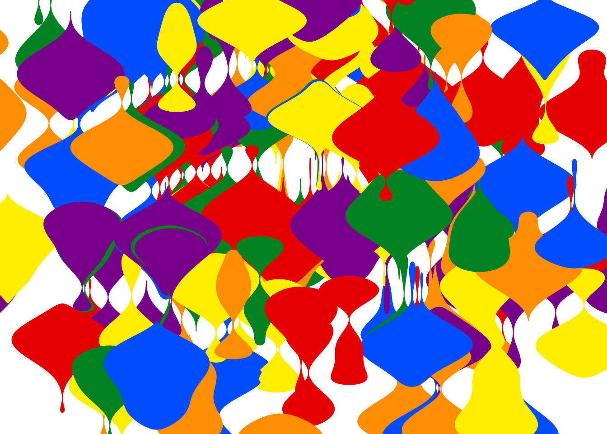
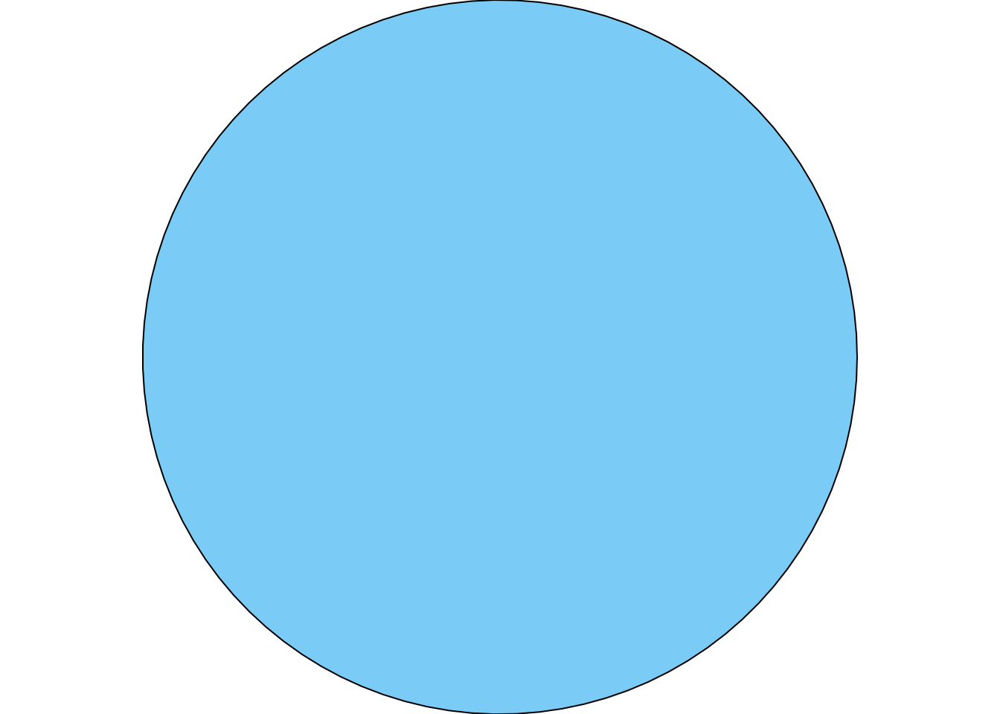
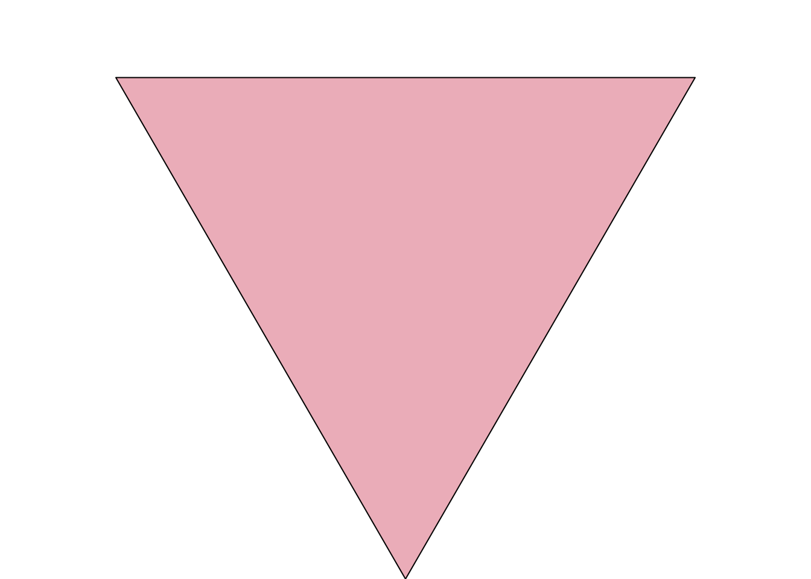
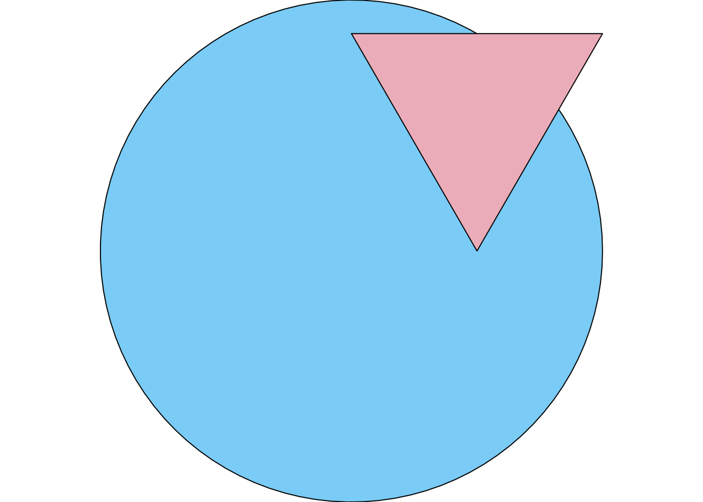
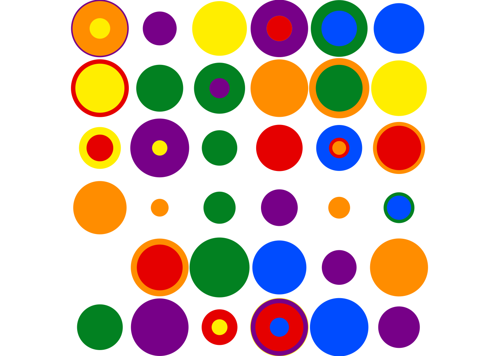
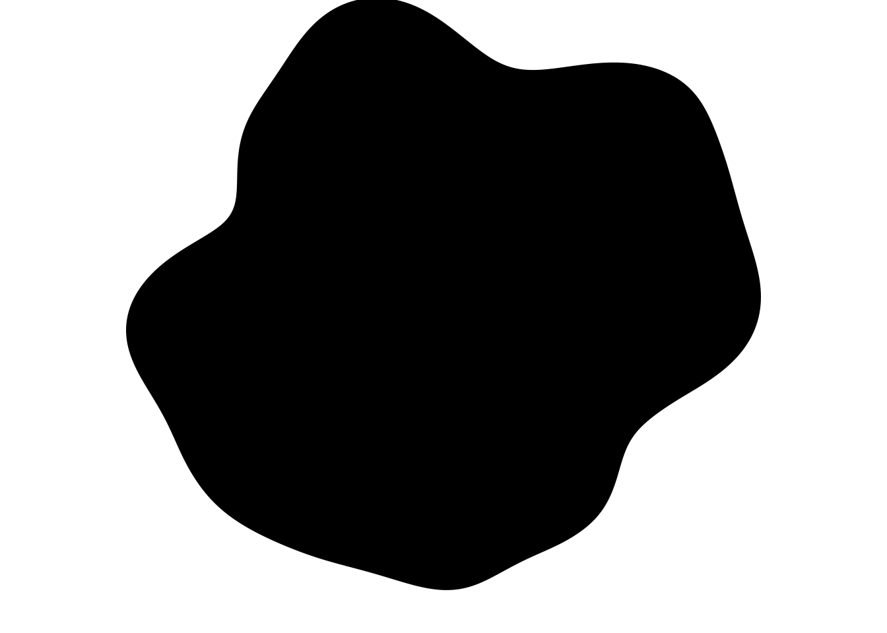
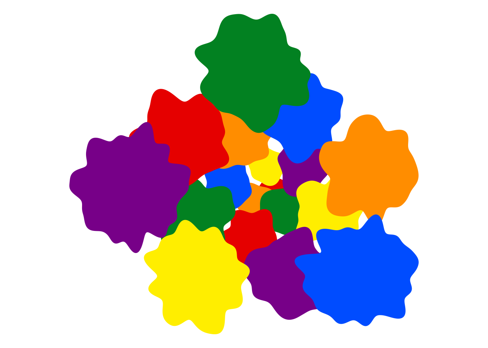

Content note: This post includes mentions of sexual assaults, and other unpleasant topics that relate to LGBT experiences of the world
Prelude I
It has been a minute since I wrote anything new, but thankfully I have found time for another side project and, by extension, another blog post. This one is going to be a little different though. Like everything on this blog it is in fact a data science post. I’m going to talk about art, object-oriented programming in R, and the grid graphics system. It being the time of the Sydney Gay and Lesbian Mardi Gras – or “Gay Christmas” as it is affectionately known – I’ll do it with a rainbow palette. Nevertheless, pretty palettes notwithstanding this won’t be a particularly upbeat pride-flag-waving kind of post. There will be art, and there will be code. But there will also be little slivers of darker stories, and in a moment I’ll explain why I’ve made the decision to include them. But let’s start with the art.
# colour schemepalette <-c("#e50000", "#ff8d00", "#ffee00", "#028121", "#004cff", "#770088")# parameters defining objectsvalues <- tibble::tibble(x =cos(seq(0, pi *5/3, length.out =6)),y =sin(seq(0, pi *5/3, length.out =6)),n =500L,fill = palette,color = fill)# list of blob objects to add to a sketchblobs <- purrr::pmap(values, blob)# define and draw a sketch containing the objectsblobs |>sketch() |>draw()

The piece is very simple, but has a lovely balance to my eye. Each colour of the pride flag is captured in a single “blob”, with the blobs arranged in a circular overlapping pattern that conveys a sense of movement and progress. More subtly, if you look at the blobs closely you can detect a kind of spatial autocorrelation. Notice how the green, yellow, and orange blobs all have a protrusion on their right hand side at approximately the same place. You’d be tempted to think this is coincidental, but it isn’t. Hidden under the hood there is a vector field that induces correlations on the random process that creates the blob shapes. This is by design.
The spatial autocorrelation that provides hidden structure to this artwork becomes a little more obvious if I switch to a different piece constructed with very similar tools:
# parameters defining objectsvalues <- tibble::tibble(x =rnorm(200L, sd =1.5),y =rnorm(200L, sd =1.5),xend = x,yend = y +1,width =1,n =500L,fill =sample(palette, 200L, replace =TRUE),color = fill)# list of ribbon objects to add to a sketchribbons <- purrr::pmap(values, ribbon)# define and draw a sketch containing the objectsribbons |>sketch() |>draw(xlim =c(-2, 2), ylim =c(-2, 2))

In this piece the blobs are more ribbon shaped, and the piece as a whole feels a little like a rainbow coloured lava lamp. The spatial autocorrelation is more obvious. The ribbons tend to be thick in the same regions of the plot, and thin in other regions.
Each of these ribbons is a distinct individual object, yet somehow they all have similar experiences when embedded in the environment that defines the art. There is a pattern to how they flow through this world.1
An artist looking at this piece might wonder about the trickery used to create this structure. An R programmer looking at it, however, might be wondering something very different. They would likely be asking questions like “what the fuck is this ribbon() function, and what the hell is a sketch(), and how are you rendering this with this draw() function that you piped it to? Absolutely none of this is part of base R, it’s clearly not ggplot2 code, and it’s not even consistent with any well-known data visualisation tool in the R ecosystem. What the hell are you doing here girl?
Prelude II
As I was saying. Mardi Gras is in full swing in Sydney at the moment, a multi-week festival and parade sprawling across multiple sites across the city. As I write this I am sitting in the sunshine at a bar on Bondi Beach, while a massive stage is being constructed below for the “Bondi Beach Party” event. The surfers, swimmers, and sunbathers are having a lovely day at the beach. Everyone is partying.
About a kilometer away, above the iconic limestone cliffs that surround almost every Sydney beach, is the Marks Park Memorial in Tamarama. The memorial serves as a remembrance for the LGBT victims of hate crimes in Sydney, a stark reminder of the perennial apathy that the NSW police show towards these crimes, and most especially to the gay men who were murdered at these cliffs back in the 1970s and 1980s and whose deaths are to this day the subject of inquests into the appalling behaviour of the police in this city.
The contrast is stark. It is one that few people are willing to face up to, particularly cisgender straight people who fancy themselves to be allies of our community but think that allyship means nothing more than waving a little rainbow flag and reciting empty slogans like “love is love”. It’s these people who – oh so frequently – hasten to inform me that things have changed. It’s different now, they confidently tell me. Everyone is so accepting, they say with a certainty I do not share. You don’t need to hide who you are, they reassure me. It’s a surprisingly predictable narrative.
None of it is true, of course. I could tell the very recent story of Nex Benedict, the non-binary teenager whose death the Oklahoma authorities seem to be trying very hard not to investigate. I could tell the story of Brianna Ghey, a trans girl stabbed to death in the UK. Closer to home, I could tell the story of Mhelody Bruno, a Filipina trans woman strangled to death by her boyfriend in regional NSW and whose death was barely even investigated by the NSW police and courts. These events all took place in the US, the UK, and Australia, and all quite recently. They are not stories from a time long past.
I could tell all these stories, but what I have learned is that describing these events has very little impact on the people who keep telling me that actually things are fine now. Those stories are the outliers, they tell me. The bad stories are the exceptions, not the norm.
Again, it is not true. The thing that well-meaning cis and straight people have this massive blindspot about, is the fact that so many LGBT people have dark stories from our own experience that we aren’t telling them about, and so they impute a much happier backstory to us than is even remotely plausible. People who barely even know me will, to my utter bewilderment, confidently tell me to my face that – despite being transgender and bisexual – I could not possibly have had any particularly traumatic experiences. The gall of it is shocking, actually.
Act I: Learning to love S7
This whole thing started because I wanted to learn how to use the relatively new S7 object oriented programming system that is intended to serve as a successor to the informal-but-janky S3 system and the formal-but-painful S4 system that already exist within R.2 It seemed like a very simple exercise when I started, but as with any exercise in learning a new thing I very quickly felt like a dog trying to understand Norway.3
As is my habit, I’ve taken my learning process and used it to create art. What I want to do with S7 here is create a system for programmatically constructing “drawable shapes” that abide by particular rules, alongside a toolkit that can take these objects and render them within an abstract “sketch” that can later be rendered to an image with the help of the grid graphics system. In that sense, the basic idea underpinning my tool is not that different – though far less sophisticated – to how ggplot2 works, but I’ve designed it with different considerations in mind. My tools are not designed for data visualisation, they are designed for generative art. Spiritually they have more in common with p5.js than ggplot2.
Writing a new S7 class
Okay look. It’s kind of like this. While eventually the stated plan is for S7 to become part of base R and be easily available to any R user – no different to S3 and S4 – it’s still in development and there are still quirks. So for now it’s a regular package like any other one and if we want to start building classes with it we’ll have to load the package:
library(S7)
Let’s have a look at how you define classes in S7, and for the moment we’ll keep it simple. All I’m going to do right now is create a new class that represents a circle. The way we do this in S7 is with the new_class() function:
By doing so, I create a new function called circle() that has arguments corresponding to the x, y and radius properites. I can call this function to create a new circle object. In the code below I create an object cc that – at least in some very abstract sense of the term – corresponds to the unit circle:
cc <-circle(x =0, y =0, radius =1)cc
<circle>
@ x : num 0
@ y : num 0
@ radius: num 1
Here we have a circle object that has three “properties” x, y, and radius. We can think of it as something broadly similar to a named list, but it has rules attached. In the class definition above I specified that x, y, and radius must be numeric values: they are allowed to be integers or doubles, but they can’t be characters. Here’s what happens if I try to create a circle with radius = "big":
circle(x =0, y =0, radius ="big")
Error: <circle> object properties are invalid:
- @radius must be <integer> or <double>, not <character>
So here we see something that we wouldn’t normally have in, say, an S3 class:4 the class definition explicitly says that the radius property must be numeric, so my circle() function throws an error if I foolishly try to pass it a non-numeric radius.
Okay so what’s going on with these “properties”? Properties are analogous to “slots” in an S4 object5 and can be accessed using @:
cc@radius
[1] 1
One nice thing about S7 is that you can modify (most) properties of an object directly. So if I want to update my cc object so that it now (nominally) represents a circle with radius 2, I can do this:6
cc@radius <-2cc
<circle>
@ x : num 0
@ y : num 0
@ radius: num 2
Amazing. Thrilling. The excitement, it cannot be contained.
Default values
The bar has pride flags plastered on the window, and they’re advertising a drag show. These superficial safety signals do not make me feel safe though, because what I remember about this bar is the feel of a strangers hands at my neck as he forced his tongue down my throat in full view of the patrons in the queer themed rainbow bar upstairs. He was so strong.
One limitation to the circle() function I just created is that it doesn’t supply default values for the x, y, and radius properties, so the user has to explicitly pass values every time it is called. That’s not always ideal, especially as your classes become more complex (we’ll see this later) and have many properties that only rarely need to be modified by the user.
To fix this, it’s helpful to note that when I wrote x = class_numeric in the previous definition for the circle class I was relying on a shorthand notation. If you want to be more explicit in how properties are defined, you can use the new_property() function. One of the arguments to new_property() is default and allows you to provide a default value for that property in case the user doesn’t supply one. So here’s a modified version of our circle class that supplies defaults for all three properties:
Now that I’ve done so, it’s possible for the user to construct a new circle by supplying values only for those properties where they want to override the default. So this now works:
circle(x =2)
<circle>
@ x : num 2
@ y : num 0
@ radius: num 1
As you can see, this object describes a circle with default values y = 0 and radius = 1, as well as a user supplied value x = 0.
Computed properties
Let’s be honest. This circle class only represents a circle in the most abstract sense. It’s a list of three numbers that you need to describe a circle, but it doesn’t actually compute any points that lie on the circumference of said circle. If you wanted to draw the circle in question, you’d have to actually compute those points yourself. For a circle this computation is so very straightforward that it seems strange to bother doing it within the circle object, but other kinds of parametrised shapes (notably the blob and ribbon objects that are going to appear later) are more complex and the relationship between the parameters and the vertices of the shape is more complex. In those cases, it seems very sensible to compute the vertices of the shape within the object itself.
One very handy feature of S7 classes is that they support computed properties. A computed property is one that is not supplied by the user, and whose value is constructed (initially at the time of object creation, but we’ll revisit this) on the basis of the regular properties of the object. So, for instance, our circle class already has ordinary properties x, y, and radius, but we could add a computed property called points that contains the coordinates of the vertices of the circle that is defined by the x, y, and radius values. In practice, however, that means we’ll need to add another new property to our class. As a mathematical abstraction, there are an infinite number of points that sit on the perimeter of a circle. In real life, we’ll have to approximate this by choosing n evenly spaced locations on the circle.
To that end, we can update our circle class like this:
Even a moments inspection of the code makes clear that the points property is rather different to the others. The data stored within points is structured as a data frame (we’ll improve on this later) that has columns corresponding to the x- and y-coordinates of the points. Critically, however, the user does not supply the value for points. Instead, what I have done here is use the getter argument to new_property() to supply a function that is executed whenever a new circle is created. The getter function always takes a single argument self, referring to the circle object itself, and returns the value that will be assigned to the computed property (in this case points).
The key thing about the getter function is that you can reference the other properties of the object. So, in the code above, you can see that I’ve used self@x, self@radius, etc, to refer to the values of the x and radius values that were supplied by the user. By doing so, it’s pretty easy to write code that programmatically constructs the value of a computed property, using the user-supplied property values to do so.
So let’s have a look at what happens when we use our updated circle class. When I create a new circle, the points property is automatically computed using the user-specified x, y, radius, and n properties:
cc <-circle(x =1, y =2, radius =3, n =50L)cc
<circle>
@ x : num 1
@ y : num 2
@ radius: num 3
@ n : int 50
@ points:'data.frame': 50 obs. of 2 variables:
.. $ x: num 4 3.98 3.9 3.78 3.61 ...
.. $ y: num 2 2.38 2.76 3.13 3.47 ...
Another nice feature of computed properties in S7 is that they are dynamic. When I update one of the other properties, the computed points property is automatically updated. For example, let’s take the circle object cc that I constructed in the last code snippet, and instruct R to compute it using a mere 5 points along the perimeter:7
cc@n <-5Lcc
<circle>
@ x : num 1
@ y : num 2
@ radius: num 3
@ n : int 5
@ points:'data.frame': 5 obs. of 2 variables:
.. $ x: num 4 1 -2 1 4
.. $ y: num 2 5 2 -1 2
The same trick could be used dynamically to change the size or location of the circle (I leave it to the reader to imagine the potential here in the generative art context).
A key thing to note about the points property that I just created is that it is read-only. Formally, the way you know that it is read-only is because I have defined a getter function for it but have (deliberately) not defined a setter function that would be executed if the user tries to change points directly. Because of this, points is read-only. The user is permitted to read and extract the property via the @ accessor operator…
cc@points
x y
1 4 2
2 1 5
3 -2 2
4 1 -1
5 4 2
but they are not allowed to write directly to that property. The only8 way to modify a computed property is by modifying the other properties from which it is computed:
cc@points <-data.frame(x =1:3, y =4:6)
Error: Can't set read-only property <circle>@points
For the purposes of the tool I want to create, the read-only nature of points is a desirable feature. I don’t want users trying to manually create the points that lie on the circumference of a circle. The abstract concept of a circle is defined by x, y and radius, and if I want to create n evenly spaced points on the circle, then these points are automatically computed as a byproduct of specifying these values.
Validators
Am I a woman? I mean, there are men who seem pretty happy to humiliate me, choke me, and rape me as if I were a woman, but is that the validation I want? It says “female” on all my documents now, and I fought tooth and nail for years to make that happen. Is the fight itself enough for me to earn my place as a valid woman? But if so, then why am I repeatedly having to justify my life to the satisfaction of men who ignore me when I talk about the reality of life as a trans woman, who treat every interaction with me like they’re having an academic debate, and whose only interest in my life is using me as a vehicle to argue that I have an unfair advantage in the sporting contests that I’m too frightened to participate in? This must all count for something, surely. Does there come a point at which I too can make a valid claim to be the victim of misogyny?
Another limitation to the circle class that I’ve just created is that there is no validator function. The role of a validator is to ensure that the values that the user passes during object construction correspond to a valid object. A circle can’t really have a negative radius. The x and y values that define the center of the circle need to be scalar values. The number of points n can’t be non-negative. The class that I’ve just created doesn’t enforce these constraints. Sometimes this means that you can pass nonsense values and end up with something that looks like a valid circle, but isn’t:
circle(x =1:2, y =1)
<circle>
@ x : int [1:2] 1 2
@ y : num 1
@ radius: num 1
@ n : int 100
@ points:'data.frame': 100 obs. of 2 variables:
.. $ x: num 2 3 1.99 2.98 1.97 ...
.. $ y: num 1 1.06 1.13 1.19 1.25 ...
Other times, you can pass nonsense values and get an error message because one of the internal function calls doesn’t work properly:
circle(n =-4L)
<circle>
Error in seq.default(0, 2 * pi, length.out = self@n): 'length.out' must be a non-negative number
Neither of these outcomes is a good thing. What you really need here is a validator function that checks the user inputs and throws an informative error whenever those inputs are invalid. A nice feature of S7 is that it supports validators “out of the box”, and makes the validator part of the class definition itself.
So here is an updated circle class definition that incorporates a validator function. It’s a relatively clean setup, because you can simply have the validator return the string for your error message, or else have a NULL return value if the inputs are good:
circle <-new_class(name ="circle", properties =list(x =new_property(class_numeric, default =0),y =new_property(class_numeric, default =0),radius =new_property(class_numeric, default =1),n =new_property(class_integer, default =100L),points =new_property(class = class_data.frame,getter =function(self) { angle <-seq(0, 2* pi, length.out = self@n)data.frame(x = self@x + self@radius *cos(angle),y = self@y + self@radius *sin(angle) ) } ) ),validator =function(self) {if (length(self@x) !=1) return("x must be length 1")if (length(self@y) !=1) return("y must be length 1")if (length(self@radius) !=1) return("radius must be length 1")if (length(self@n) !=1) return("n must be length 1")if (self@radius <0) return("radius must be a non-negative number")if (self@n <1L) return("n must be a positive integer") })
This probably isn’t the ideal form for the circle validator (e.g., I could probably think more about what messages should be returned) but it illustrates the basic idea. The key thing is that, for example, if I try to pass a negative radius I get an error:
circle(radius =-0.234)
Error: <circle> object is invalid:
- radius must be a non-negative number
One thing I’m learning very quickly is that when you’re designing a system that is built from many different classes, it is extremely valuable to have validators for all your classes. Debugging becomes much easier on the one hand, and on the other hand you can always move forward in your code knowing that when class A depend on class B in some fashion, you can always rely on knowing that every class B object that class A works with will be a valid instance of class B. A little bit of extra effort when writing the class definition spares you a lot of pain down the track when you’re trying to make sense of how your classes interact with each other.
Building structure
The constituent pieces of an oppressive system are often innocuous on their face, very often the result of thoughtlessness rather than malice. The consequences, however, are cruel. Crying in a hotel lobby at a conference when your documentation doesn’t match your appearance and the staff are arguing with each other over whether you’re really the person pictured on the drivers licence you have not yet been able to change. Crying in a lecture theatre in front of an audience because the programmer who designed the IT system didn’t consider name and gender to be malleable properties so even though you’ve updated your records with HR, the IT system has just outed you to all your students. Trying to work out if you’re allowed to use the bathroom next to your office because nobody bothered to write a policy document, and instead walking a kilometer to go off-campus to pee. Living in dread waiting for the next time you fall into the cracks in the system.
Up to this point, all I have done when designing my system is define a circle class that creates objects with a specific structure. In order to expand this into a richer tool that can eventually support the artistic goals I have in mind, I’m going to need to broaden my vision and think about a collection of related classes that play nicely with one another.
In order to make this shift, a natural place to start is thinking about what kind of objects should be stored internally within a circle object (and other shapes). For instance, in the code above I stored the computed points as a simple data frame. It would be more sensible to define an actual S7 class for this, with its own validator to make sure that any shape classes I define compute a valid set of points:
points <-new_class(name ="points",properties =list(x = class_numeric,y = class_numeric ),validator =function(self) {if (length(self@x) !=length(self@y)) {"x and y must be the same length" } })
Similarly, when the time comes to start drawing these things, my circles (and other shapes) will need to have a defined visual style. Again, I can create a class for this:
You’ll notice that style currently doesn’t have a validator, and it doesn’t support a very wide range of properties. The artistic system I want to consider has the constraint that every drawable shape is a polygon of some kind, and needs to have stylistic properties that one associates with polygons. The color, fill, and linewidth properties that exist within this style class are a beginning, but nothing more than that. Similarly, the absence of a validator is a strong hint that I haven’t finished thinking through what I want this class to be. For the current purposes the style class works, but it’s very far from complete.
Let’s move on, and start thinking about what happens when my system has a richer collection of drawable shapes than just circles. Later on in this post I’m going to define several different kinds of drawable shapes (e.g., the blob and ribbon objects in the initial artwork), and they’ll all have some structural similarities to one another that I want to enforce. To that end I’ll create a class called drawable.9 The drawable class will later be used as the parent class for all the shape classes that I want to be, well, drawable. But it’s not super interesting in itself. Here’s the code:
The true purpose of the drawable class is that it enforces structure. Every drawable shape class that I later define will necessarily have a computed points property, and a user-defined style property. As an added benefit, because the only information I’ll ever need to draw a shape is captured by style and points, I will be able to define a single drawing method that works for all drawable objects regardless of their specific character.
Okay so now we can define circle as a subclass of drawable. It doesn’t change the code very much. All I’m doing here is adding parent = drawable to the class definition:
circle <-new_class(name ="circle",parent = drawable,properties =list(x =new_property(class_numeric, default =0),y =new_property(class_numeric, default =0),radius =new_property(class_numeric, default =1),n =new_property(class_integer, default =100L),points =new_property(class = points,getter =function(self) { angle <-seq(0, 2* pi, length.out = self@n)points(x = self@x + self@radius *cos(angle),y = self@y + self@radius *sin(angle) ) } ) ),validator =function(self) {if (length(self@x) !=1) return("x must be length 1")if (length(self@y) !=1) return("y must be length 1")if (length(self@radius) !=1) return("radius must be length 1")if (length(self@n) !=1) return("n must be length 1")if (self@radius <0) return("radius must be a non-negative number")if (self@n <1L) return("n must be a positive integer") })
To see that our new circle class is indeed a subclass of drawable, we can create a new circle and check its class attribute:
cc <-circle()class(cc)
[1] "circle" "drawable" "S7_object"
The primary class is circle, as you’d expect, and the parent class is drawable. Notice also that the object has a third class, S7_object: all S7 objects possess this class.
Constructors
Imposing this structure on our drawable objects is valuable, and will pay off later because everything that we need to draw the shape is captured by the embedded style and points objects. However, as an unfortunate side effect of this, I’ve accidentally defined a class that makes it very hard for the user to supply the stylistic features: the arguments to our new circle() function are now:
style, which has to be a call to the style() constructor
x, y, radius, and n, as before
That means that if I want to define a red circle with radius 2, my poor user (i.e., me) has to do something rather unpleasant:
circle(style =style(color ="red"), radius =2)
<circle>
@ style : <style>
.. @ color : chr "red"
.. @ fill : chr "black"
.. @ linewidth: num 1
@ points: <points>
.. @ x: num [1:100] 2 2 1.98 1.96 1.94 ...
.. @ y: num [1:100] 0 0.127 0.253 0.379 0.502 ...
@ x : num 0
@ y : num 0
@ radius: num 2
@ n : int 100
The reason this is cumbersome is that my drawable class imposes a structure in which all the stylistic features are captured by the style property (shared by all drawables), whereas all the parameters that are used to construct the points property are specific to the particular drawable class (circle, blob, ribbon, etc). This internal structure is a good thing insofar as it ensures I can always extract the two key properties from any drawable:
cc@style
<style>
@ color : chr "black"
@ fill : chr "black"
@ linewidth: num 1
As you can imagine, this is a handy feature in a generative art tool. Nevertheless it’s a huge pain in the arse from the user perspective when it comes to constructing a new circle object.
Fortunately, S7 makes it possible to fix this by allowing the class definition to include a custom constructor function that allows the developer to customise the arguments that the user supplies.
Here’s what the circle class looks like with a custom constructor:
circle <-new_class(name ="circle",parent = drawable,properties =list(x = class_numeric,y = class_numeric,radius = class_numeric,n = class_integer,points =new_property(class = points,getter =function(self) { angle <-seq(0, 2* pi, length.out = self@n)points(x = self@x + self@radius *cos(angle),y = self@y + self@radius *sin(angle) ) } ) ),validator =function(self) {if (length(self@x) !=1) return("x must be length 1")if (length(self@y) !=1) return("y must be length 1")if (length(self@radius) !=1) return("radius must be length 1")if (length(self@n) !=1) return("n must be length 1")if (self@radius <0) return("radius must be a non-negative number")if (self@n <1L) return("n must be a positive integer") },constructor =function(x =0, y =0, radius =1, n =100L, ...) {new_object(drawable(),x = x,y = y,radius = radius,n = n,style =style(...) ) })
There’s a few things to note here:
The constructor function always ends with a call to new_object(), and the first argument is always the parent class (i.e., in this case the parent of circle is drawable).
The way I’ve cleaned up my arguments is by having four explicitly defined arguments for a circle (x, y, radius, and n), and then included the dots ... that are then passed onto style()
I’ve surreptitiously changed the way that my default arguments are specified: the constructor function is now responsible for defining defaults.
The extra effort that goes into writing a custom constructor is in some ways a pain (especially because it does mean that any subclass of circle will also need a custom constructor), but in this case it’s worth it because I can create a blue circle in a natural way:
cc <-circle(radius =2, fill ="#7acbf5")cc
<circle>
@ style : <style>
.. @ color : chr "black"
.. @ fill : chr "#7acbf5"
.. @ linewidth: num 1
@ points: <points>
.. @ x: num [1:100] 2 2 1.98 1.96 1.94 ...
.. @ y: num [1:100] 0 0.127 0.253 0.379 0.502 ...
@ x : num 0
@ y : num 0
@ radius: num 2
@ n : int 100
Other drawables
Later in the post I’ll go on to define the blob and ribbon classes that are so much fun for artistic purposes, but we have a long way to go before we get to that. One thing I will do now, however, is define a general purpose shape class that isn’t very interesting, but handy to have as a fallback. The shape class has no interesting parameters: the user directly supplies the x and y coordinates that define the points property for the shape. This is very handy artistically in situations where you don’t really want to bother defining a shape parametrically, and instead just want to supply the vertices directly:
shape <-new_class(name ="shape",parent = drawable,properties =list(x = class_numeric,y = class_numeric,points =new_property(class = points,getter =function(self) {points(x = self@x, y = self@y) } ) ),validator =function(self) {if (length(self@x) !=length(self@y)) {"x and y must be the same length" } },constructor =function(x, y, ...) {new_object(drawable(),x = x,y = y,style =style(...) ) })
It’s not interesting, but you can use it to manually define a pink triangle like this:
tr <-shape(x =c(0, 2, 1), y =c(sqrt(3), sqrt(3), 0),fill ="#eaacb8")tr
<shape>
@ style : <style>
.. @ color : chr "black"
.. @ fill : chr "#eaacb8"
.. @ linewidth: num 1
@ points: <points>
.. @ x: num [1:3] 0 2 1
.. @ y: num [1:3] 1.73 1.73 0
@ x : num [1:3] 0 2 1
@ y : num [1:3] 1.73 1.73 0
Honestly, I’m only mentioning it now because in a moment I’m going to define drawing functions that I’ll apply to the circle object cc from before, and the tr object I’ve just created.
Act II: Sketching with grid
I am sitting in shock on my couch. That was… that was rape, right? If I were a cisgender woman that would clearly be rape, right? I said no, repeatedly. He forced his way in. Into my apartment. Into me. It happened, right? I mean, I know it happened, because it hurts where he forced me. So I know it happened, my body is telling me exactly what happened. But… that really did just happen, right?
At this stage in the development process I have a sensible collection of S7 classes that I can use to represent polygons in a systematic way. I have style and points classes that capture the “raw” characteristics of the polygons, and I have drawable and its child classes circle and shape (with blob and ribbon to come shortly) that allows me to construct drawable shapes in a convenient way.
What I don’t have yet is a method for actually drawing these things.
Drawing drawables
There are a lot of ways I could go about creating actual drawings from drawable objects, and I did spend a little time thinking about the pros and cons of different approaches. What I landed on in the end, however, was a strategy where I would define a new generic function called draw() and then supply methods for it that use the grid graphics system in R to do the rendering.
To construct a new generic function in S7, we use the new_generic() function. Here’s is how I’ve done that to create draw():
In this code, the dispatch_args argument is used to indicate which arguments to the draw() function should be used in method dispatch. I’ve kept it simple in this case: the specific method that S7 will choose for draw() is based on the class of the object argument. For the moment, the only class for which I really need to supply a method is the drawable class (i.e., how should draw() handle the input when it is passed a single drawable object), but very shortly I’m going to define a sketch class that allows many drawable objects to be composed into a single image, so I’ll need a draw() method to handle sketch inputs as well.
But I am getting ahead of myself. To specify a method for an S7 generic function, we call the method() function and specify the generic for which the method is to be defined (i.e., draw()), and the class for which the method is defined (i.e., drawable). Here’s the code that I used:
If you are familiar with the grid package, you can immediately see that this is a very simple use of grid (e.g., compare it to ggplot2, which is very sophisticated in how it uses grid). All I’m doing here is defining a single plotting region (i.e., the viewport) and – because this is art rather than data visualisation – using "snpc" units to enforce a strong constraint that the x and y axes of this plot region will always be on the same scale, similar to how coord_equal() works in ggplot2. Our drawable object is then used to construct a single polygon grob: the internal points object contained within every drawable is used to define the vertices of the polygon, and the internal style object contained within every drawable is used to specify the graphical parameters associated with the polygon. See? I told you that all the effort we went to in imposing structure on the drawable class would come in handy. The draw() method is easy to write because the structure of the objects is aligned with the underlying functions we want those objects to support.
So here we go. At last we can draw simple shapes. Here’s our blue circle:
draw(cc)

Here is our pink triangle:
draw(tr)

Not exactly high-calibre art, but the foundations are in place for us to start building more interesting tools atop these classes and methods.
Making sketches
Early in transition, walking into the office in my academic department. “So you’re a woman now? Are you going to get the surgery? Or did you already have it? Are you looking for a husband?” Um, I was hoping to use the photocopier if that’s okay? I have a class handout to prepare. Wasn’t planning to have a conversation about my genital status actually, and I feel like if I were a cis woman you’d realise that your professional colleagues’ genitals are not an appropriate workplace conversation topic.
At last the time has come to define the sketch class that will allow us to compose multiple drawables into a single drawing. Happily for us this is very simple to do. My first pass at defining a sketch class looks like this:
sketch <-new_class(name ="sketch",properties =list(shapes =new_property(class = class_list, default =list()) ),validator =function(self) {if (!all(purrr::map_lgl(self@shapes, \(d) inherits(d, "drawable")))) {"shapes must be a list of drawable-classed objects" } })
Internally it is very simple: it has one property shapes, which is defined to be a list of drawable objects. Notice that we have a validator function for the class that checks to see that every element of the shapes list inherits from the drawable class. Easy.
Defining a draw() method for the sketch class is only slightly more complicated than the corresponding method was for a single drawable object. The only subtlety to it is determining what the “plot limits” should be if the user doesn’t manually specify xlim and ylim. Here, all I’ve done is set the default limits so that the plot includes all the constituent objects in the sketch:
You’ll notice that the drawing code isn’t very sophisticated here either: it’s a simple loop that draws the individual shape objects in the same order that they appear in the sketch. I’ve made no effort at all to make the code efficient. For now all I care about is that it works.
You can see it in action here, where I’ve created a very simple sketch called sk that includes the blue circle cc and pink triangle tr, and then drawn it:
sk <-sketch(list(cc, tr))draw(sk)

Creating art programmatically
Recall earlier, back when I was talking about constructors, how I said that the primary reason for writing my custom constructor functions was user convenience, so that stylistic properties could be passed to circle() etc as “top level” arguments rather than being bundled within a call to style()? Well, that was true as far as it goes, but the convenience factor is a little bit more substantial than saving myself some keystrokes. By creating an API that exposes the stylistic and structural parameters as top level arguments, I can create a data frame that describes all the desired features of a sketch, like this:
Because the column names in values match the corresponding arguments to circle(), including those that are passed down to style(), I can create a list of 100 circles to plot using a single call to purrr::pmap():
circles <- purrr::pmap(values, circle)
I’m not going to print this circles object because the output would be quite long, but the key thing is that it is a list of 100 objects that possess the drawable class, so I can pass it straight to sketch(), and then pass the corresponding sketch straight to draw(). So the process of constructing my plot is as simple as this:
circles |>sketch() |>draw()

Finally we are starting to see some artistic payoff here, and some potential benefit to using a system like this rather than ggplot2. As much as I adore using ggplot2 for artistic purposes, it’s often clunky to do so precisely because ggplot2 is an extremely powerful tool that is designed for a different purposes. Art is not data visualisation (though arguably they are related), and the design goals of an artistic system are not always aligned with the design goals of a data visualisation tool.
Act III: Ambient
I have become fearful now. Anxiety about travelling too far from home has become severe. I know my neighbourhood. I know where all the exits are. I know which bathrooms are safe. Travel to an unfamiliar part of Sydney makes me anxious. Travel to another city makes me panic. Travel to another country is terrifying.
To be entirely honest with you, dear reader, everything up to this point in the post has been an exercise in creating the infrastructure for artistic work using S7 and grid. The circle() and shape() functions are both handy little things for illustrating the basic ideas, while sketch() and draw() serve as the core vehicles for turning abstract descriptions into actual art. But there’s a limit to how much artistic work you can pull off using only circles, so the time has come to spread our wings and start writing more interesting drawable subclasses that can be used to create more intricate pieces.
Let’s get to it, shall we?
Blobs
At this point in the process of exploring my new system I’ve only written two fun classes that I’ve defined so far, the blob and ribbon objects that you saw at the start of the post. Let’s start with blobs.
A blob object is essentially a circle with a non-constant radius, where pointwise variation in the radius is calculated using Perlin noise with the assistance of the ambient package. This is actually a type of object I’ve used in my art before. The Perlin Blobs series I created a few years ago uses exactly this trick. In the code below all I’m really doing is defining a blob() function (and corresponding S7 class) that incorporates this idea within the “sketches” framework that I’ve just built. Here’s the entire source code:
blob <-new_class(name ="blob",parent = drawable,properties =list(x = class_numeric,y = class_numeric,radius = class_numeric,range = class_numeric,n = class_integer,frequency = class_numeric,octaves = class_integer,seed = class_integer,points =new_property(class = points,getter =function(self) { angle <-seq(0, 2*pi, length.out = self@n) pointwise_radius <- ambient::fracture(noise = ambient::gen_simplex,fractal = ambient::fbm,x = self@x +cos(angle) * self@radius,y = self@y +sin(angle) * self@radius,frequency = self@frequency,seed = self@seed,octaves = self@octaves ) |> ambient::normalize(to = self@radius +c(-1, 1) * self@range)points(x = self@x + pointwise_radius *cos(angle),y = self@y + pointwise_radius *sin(angle) ) } ) ),constructor =function(x =0,y =0,radius =1,range =0.2,n =100L,frequency =1,octaves =2L,seed =1L, ...) {new_object(drawable(),x = x,y = y,radius = radius,range = range,n = n,frequency = frequency,octaves = octaves,seed = seed,style =style(...) ) },validator =function(self) {if (length(self@x) !=1) return("x must be length 1")if (length(self@y) !=1) return("y must be length 1")if (length(self@radius) !=1) return("radius must be length 1")if (length(self@range) !=1) return("range must be length 1")if (length(self@n) !=1) return("n must be length 1")if (length(self@frequency) !=1) return("frequency must be length 1")if (length(self@octaves) !=1) return("octaves must be length 1")if (length(self@seed) !=1) return("seed must be length 1")if (self@radius <0) return("radius must be a non-negative number")if (self@range <0) return("range must be a non-negative number")if (self@frequency <0) return("frequency must be a non-negative number")if (self@n <1L) return("n must be a positive integer")if (self@octaves <1L) return("octaves must be a positive integer") })
The code for blob() is a bit longer than the corresponding code for circle(), and all the interesting work is done within the computed property that constructs the points object. This post is already fairly long, so I won’t unpack all the detail, but I will note that if you read my blog post on the Splatter system this code probably seems familiar, at least to the extent that I’m using the tools from the ambient package in a fairly similar way.
The one new trick hidden in this code is the fact that the Perlin noise is computed at the actual coordinates where the object is to be drawn in the plot (see the x and y arguments to ambient::fracture(). This part is critical to producing the spatial autocorrelation, because any two blobs constructed using the same seed value will use the same underlying generator, and the distortions associated with those objects will vary smoothly in the actual coordinate space within which the are subsequently drawn.
In any case, here is a simple blob object:
bb <-blob(n =500L)draw(bb)

So, using the rainbow palette I defined at the top of the post, we can create a new piece that is somewhat similar in style to the blob-based art I showed at the very beginning:
values <- tibble::tibble(x =cos(seq(0, pi *21, length.out =18)) * (1:18),y =sin(seq(0, pi *21, length.out =18)) * (1:18),radius = (5+ (1:18)) /3,range = radius * .2, n =500L,frequency = .2, fill =rep(palette, 3),color = fill)blobs <- purrr::pmap(values, blob)blobs |>sketch() |>draw()

Honestly, I feel it could do with a bit of work to be interesting, but you get the idea.
Ribbons
At least once a week, my mind flashes back to the time early in transition when I was told that if I was ever caught using the women’s bathroom I’d be violently assaulted as punishment for the transgression. I find myself wondering how serious that threat was, if it was meant in earnest. The context for the threat is long gone. The fear it created has never quite disappeared.
Next let’s take a look at ribbon(). Once you’ve wrapped your head around the Perlin noise trick used by blob(), you can see that ribbons are a fairly trivial variation on the theme. Ribbons are similar to blobs insofar as they use Perlin noise to describe pointwise variation along a path, but whereas blob() uses this trick to vary the radius of a “circle”, ribbon() starts with a linear segment and then constructs a symmetric polygon around it whose width at any given point is defined using the Perlin noise trick. The result is that ribbon objects end up looking rather similar to violin plots used to vidualise distributions.
ribbon <-new_class(name ="ribbon",parent = drawable,properties =list(x = class_numeric,y = class_numeric,xend = class_numeric,yend = class_numeric,width = class_numeric,n = class_integer,frequency = class_numeric,octaves = class_integer,seed = class_integer,points =new_property(class = points,getter =function(self) { x <-seq(self@x, self@xend, length.out = self@n) y <-seq(self@y, self@yend, length.out = self@n) displacement <- ambient::fracture(noise = ambient::gen_simplex,fractal = ambient::fbm,x = x,y = y,frequency = self@frequency,seed = self@seed,octaves = self@octaves ) |> ambient::normalize(to =c(0, 1)) taper <-sqrt(seq(0, 1, length.out = self@n) *seq(1, 0, length.out = self@n) ) width <- displacement * taper * self@width dx <- self@xend - self@x dy <- self@yend - self@ypoints(x =c(x - width * dy, x[self@n:1L] + width[self@n:1L] * dy),y =c(y + width * dx, y[self@n:1L] - width[self@n:1L] * dx) ) } ) ),constructor =function(x =0,y =0,xend =1,yend =1,width =0.2,n =100L,frequency =1,octaves =2L,seed =1L, ...) {new_object(drawable(),x = x,y = y,xend = xend,yend = yend,width = width,n = n,frequency = frequency,octaves = octaves,seed = seed,style =style(...) ) },validator =function(self) {if (length(self@x) !=1) return("x must be length 1")if (length(self@y) !=1) return("y must be length 1")if (length(self@xend) !=1) return("xend must be length 1")if (length(self@yend) !=1) return("yend must be length 1")if (length(self@width) !=1) return("width must be length 1")if (length(self@n) !=1) return("n must be length 1")if (length(self@frequency) !=1) return("frequency must be length 1")if (length(self@octaves) !=1) return("octaves must be length 1")if (length(self@seed) !=1) return("seed must be length 1")if (self@width <0) return("width must be a non-negative number")if (self@frequency <0) return("frequency must be a non-negative number")if (self@n <1L) return("n must be a positive integer")if (self@octaves <1L) return("octaves must be a positive integer") })
Here’s the ribbon class in action:
rb <-ribbon(n =500L)draw(rb)
Using the same general tricks as before, we can construct the image by defining a values data frame, passing it to purrr::pmap() to construct a list of ribbons, and then passing those ribbons to sketch() and draw(). Here’s the result:
I’m quite fond of this one. Honestly I prefer it to most of the Mardi Gras graphic design work I’ve seen plastered all over Sydney lately.
Epilogue
So we come to the end of another blog post and, unsurprisingly, I have ended up back where I started. I find myself thinking about the Mardi Gras festivities that are currently taking over Sydney. I do like Mardi Gras. It’s a celebration and a party, true, but there is value in a highly visible event that allow the queer community to take centre stage for a few short weeks every year. Besides, parties are fun.
But there is a side to it that I don’t love. Lately it has often felt to me that there is a pressure on us to tell only the happy and uplifting stories. Yes, we deserve to celebrate, but I can’t help thinking about the Marks Park Memorial. I visited it this morning, and it was not an uplifting or happy moment. It felt dark, sombre, and sad.
And therein lies the part that makes me uneasy. I keep thinking about all those people who are not part of the queer community who insist on telling me that “everything is different now, everyone is so accepting now”. I keep wondering if the reason that people keep telling me this – despite the obvious falseness to the claim – is that the only thing they ever see are the parties. The celebrations are what they remember; the hate crimes are what they forget.
Queer people don’t have those memory lapses. We remember the hate crimes, both past and present. We remember because those stories are still a part of our daily experience of the world. But they seem to have become invisible to those outside our community, even those who believe themselves to be allies. So it comes to pass that outsiders come to believe that the world is much kinder to us than it actually is.
The little slivers from my personal experience are not things I share lightly. The events they refer to were traumatic, and of course there are other like them I’ve chosen not to discuss. I have shared only a small slice of what my life is actually like. I chose to share these ones specifically because these are the ones I’m mostly recovered from. These memories do cause problems for me from time to time, but not as much as they used to.
Even so, it is not pleasant to revisit this history. I do so here not because I want to, but because if we keep our histories secret then people start to believe the pleasant lies that they tell themselves about our world.
Footnotes
Look, I know I’m hitting the reader over the head with the metaphor, but I’m not trying to be subtle here.↩︎
For folks outside of the R community: S3, S4, and S7 are all considered to be “functional” OOP systems, and they are broadly similar to function overloading in C++ and, I have recently learned, is also analogous to how methods are defined in Julia for functions of the same name but with different signatures. The functional style of OOP programming is one in which methods attach to generic functions (or to function names), as opposed to more traditional “encapsulated” OOP systems in which methods attach to objects. The encapsulated style is standard in Python, for example, and also appears in R via the R6 OOP system that I have used in other blog posts (e.g., here and here). I mention these tiresome details because I have learned to my detriment that if I don’t exhaustively list the various distinctions between OOP systems and how R adopts multiple styles, I will have to deal with tiresome people mansplaining to me how R is bad at OOP and how OOP in R is wrong and isn’t really OOP and honestly I’m asleep before I finish reading the complaint.↩︎
Or at least not without a lot of extra effort on the developer side.↩︎
In contrast S3 is so chaotically informal that it doesn’t have any real notion of an “accessor” operator. Some S3 classes are atomic objects internally (e.g., a Date is simply a double with some attributes) and have no accessor operator, whereas others are lists internally and as such use $ as the accessor.↩︎
Like S3 and S4 and like the vast majority of R objects, S7 objects have copy-on-modify semantics. This is distinct to environments and R6 classes which have reference semantics. But let’s be honest, shall we? You either (a) already know this, (b) don’t care, or (c) don’t find this telegraphic explanation very helpful because it really isn’t very helpful. My aims in this post are pretty limited so really if you want to wrap your head around this stuff a better bet is to read Advanced R.↩︎
I mean, at this point I’m effectively turning my circle into a pentagon, but of course I could always change n again later if I wanted a different number of points.↩︎
LOL. Let’s be honest, there is always another way if you try hard enough but the point here is that you’re not supposed to modify a read-only property and S7 will throw up roadblocks if you try to do it.↩︎
Ideally I’d like to make this an abstract class, in which users can’t directly create a new drawable. In principle this is achievable by setting abstract = TRUE in the call to new_class(), but what I’ve found so far is that creates problems when – as happens slightly later in the post – I define a custom constructor function for my “circle-subclassing-drawable” class. I imagine this will be dealt with at some point, but for now I’m just ignoring the idea of abstract classes.↩︎
@online{navarro2024,
author = {Navarro, Danielle},
title = {Creating New Generative Art Tools in {R} with Grid, Ambient,
and {S7}},
date = {2024-02-25},
url = {https://blog.djnavarro.net/posts/2024-02-25_s7},
langid = {en}
}
![]()